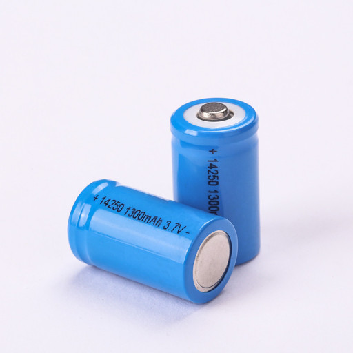

리튬은 주기율표 제1족에 속하는 알칼리 금속으로 원자 번호 3번에 해당하는 화학 원소이다. 수소, 헬륨과 함께 138억 년 전 빅뱅 우주에서 만들어진 세 가지 원소 중 하나이다. 원자량 6.941, 녹는점 180.54 ℃, 끓는점 1347 ℃, 비중 0.534을 갖는다. 리튬은 밀도가 가장 낮은 금속으로 알려져 있다. 사람이 칼로 자를 수 있을 정도로 무른 금속이다. 물과 접촉 시 격렬한 화학 반응을 일으키기 때문에 파라핀과 같은 기름 속에 보관하는 것이 일반적이다. 순수한 리튬 원소는 염화리튬(LiCl) 화합물을 전기분해하여 추출한다. 오늘날 사용되는 다른 대부분의 리튬 화합물과 마찬가지로 염화리튬은 리튬이 함유된 암석에서 얻는 탄산리튬(Li2CO3)을 이용하여 생산한다.
